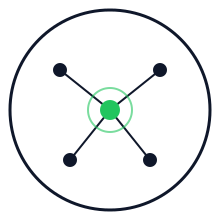

Search is not impact analysis.
Text search finds names. It does not reliably explain which callers, flows, files, and tests depend on the symbol you plan to change.

Software Brain Engine v0.4.1 GitHubOpen source. Local first. No AI calls.
SBE builds a semantic graph of your TypeScript, TSX, or Python codebase, then shows affected symbols, files, flows, tests, and the smallest useful context before you edit.
npm install -g sbe-cli
See callers and callees without opening broad folders.
Find affected files, entry flows, and connected tests before editing.
Give AI agents ranked code ranges under an explicit token budget.
The real problem
Text search finds names. It does not reliably explain which callers, flows, files, and tests depend on the symbol you plan to change.
Coding agents inspect broad directories because they lack a reusable structural map. More context still does not guarantee the right context.
Scan locally once. Ask for impact or a simulated change. Pass the focused result to a developer, review process, or AI tool.
Real CLI demo
Recorded from SBE 0.4.0 against the included authentication fixture. The output below is real, reproducible, and runs entirely on the local machine.
sbe scan .Build the graph12 symbols, 14 edges in 51 mssbe impact loginTrace dependents5 symbols across 3 filessbe simulate modify loginPlan the editRisk, flows, tests, and contextMeasured on real projects
SBE reports focused-context estimates from indexed source characters. Results depend on project shape and query scope; broad changes may save little or no context.
estimated context reduction
estimated context reduction
One local workflow
Tree-sitter extracts files, symbols, imports, references, containment, and reverse relationships into .sbe/.
sbe scan .Query a symbol directly or describe a planned migration such as “JWT to Passport”.
sbe impact loginReview risk and affected flows, run connected tests, or hand the bounded context packet to an AI agent.
sbe context login --budget 4000What ships today
Dependencies, dependents, source ranges, typed symbols, and reverse indexes.
Bounded transitive traversal with affected symbol, file, and depth summaries.
Deterministic ranking and pruning under 4k, 8k, or custom token budgets.
Modify, delete, and replace predictions with risk, flows, and test selection.
Incremental graph refresh for added, modified, and removed source files.
Machine-readable output for scripts, CI pipelines, and future agent integrations.
SBE is production-alpha. It is syntax and graph based, not a full TypeScript or Python type checker. It does not execute your project or call an AI model.
Start locally
The npm wrapper downloads the matching release binary, verifies its SHA-256 checksum, and caches it under ~/.sbe/bin/.
npm install -g sbe-clicd your-project && sbe scan .sbe simulate modify yourSymbolBuild with us